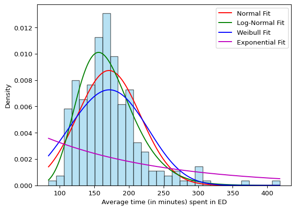

# import required libraries
import os
import PyDyTuesday
import pandas as pd
import requests
from tqdm import tqdm
from great_tables import GT
# set working directory (only for line by line coding)
# comment out when rendering!
#os.getcwd()
#os.chdir(os.getcwd() + '/2025-04-08')Pydy Tuesday 2025-04-08
Data Source

Data Source: This week we’re exploring state-level results for medicare.gov “timely and effective care” measurements. As of 2025-04-06, the data is available at the Centers for Medicare and Medicaid Services (CMS) website.
Data provided by: Tracy Teal (@tracykteal). Additional links: - a visualization by Kayla Zhu and Christina Kostandi at the Visual Capitalist
Background
Emergency room wait times vary significantly across the United States depending on factors such as hospital resources, patient volume, and staffing levels, with some states facing delays that can stretch for more than three hours.
- Is there a connection between state populations and wait times?
- Which conditions have the longest wait times? The shortest?
Set up
Download data
We can download the data using the PyDyTuesday library and specifying the date. This will load several files:
care_state.csv: data file.visits.png: image file.meta.yaml: meta data file with information about the data files and the curator.
The data dictionary is located here
# Download files from the week, which you can then read in locally
PyDyTuesday.get_date('2025-04-08')
df = pd.read_csv("care_state.csv", encoding='latin-1')care_state.csv downloaded
meta.yaml downloaded
readme.md downloaded
visits.png downloaded| Visit Times per State | |||||||
|---|---|---|---|---|---|---|---|
| state | condition | measure_id | measure_name | score | footnote | start_date | end_date |
| AK | Healthcare Personnel Vaccination | HCP_COVID_19 | Percentage of healthcare personnel who are up to date with COVID-19 vaccinations | 7.30 | 2024-01-01 | 2024-03-31 | |
| AK | Healthcare Personnel Vaccination | IMM_3 | Healthcare workers given influenza vaccination Higher percentages are better | 80.00 | 2023-10-01 | 2024-03-31 | |
| AK | Emergency Department | OP_18b | Average (median) time patients spent in the emergency department before leaving from the visit A lower number of minutes is better | 140.00 | 25, 26 | 2023-04-01 | 2024-03-31 |
| AK | Emergency Department | OP_18b_HIGH_MIN | Average time patients spent in the emergency department before being sent home A lower number of minutes is better (high) | 157.00 | 25, 26 | 2023-04-01 | 2024-03-31 |
| AK | Emergency Department | OP_18b_LOW_MIN | Average time patients spent in the emergency department before being sent home A lower number of minutes is better (low) | 136.00 | 25, 26 | 2023-04-01 | 2024-03-31 |
Data Exploration
Since there are numerous conditions reported in the data, let’s restrict our analysis to those conditions for the Emergency Department (condition = 'Emergency Department'). We’ll also restrict our analysis to measures of average time in the emergency department before being seen, which is measure_id code starting with "OP_18b".
df_ed = df[df['condition'] == 'Emergency Department']
df_ed_op = df_ed[df_ed['measure_id'].str.startswith('OP_18b')]
df_ed_op.head()| state | condition | measure_id | measure_name | score | footnote | start_date | end_date | |
|---|---|---|---|---|---|---|---|---|
| 2 | AK | Emergency Department | OP_18b | Average (median) time patients spent in the em... | 140.0 | 25, 26 | 2023-04-01 | 2024-03-31 |
| 3 | AK | Emergency Department | OP_18b_HIGH_MIN | Average time patients spent in the emergency d... | 157.0 | 25, 26 | 2023-04-01 | 2024-03-31 |
| 4 | AK | Emergency Department | OP_18b_LOW_MIN | Average time patients spent in the emergency d... | 136.0 | 25, 26 | 2023-04-01 | 2024-03-31 |
| 5 | AK | Emergency Department | OP_18b_MEDIUM_MIN | Average time patients spent in the emergency d... | 136.0 | 25, 26 | 2023-04-01 | 2024-03-31 |
| 6 | AK | Emergency Department | OP_18b_VERY_HIGH_MIN | Average time patients spent in the emergency d... | NaN | 25, 26 | 2023-04-01 | 2024-03-31 |
To get a feel for the data, let’s plot the a histogram of the average time spent in the emergency department before being seen.
import matplotlib.pyplot as plt
plt.hist(df_ed_op['score'], bins=30, color='skyblue', edgecolor='black')
plt.xlabel('Average time (in minutes) spent in ED before being sent home.')
plt.ylabel('Frequency')
#plt.title('Histogram of Your Column')
plt.show()From the histogram, we see that the time spent in the ED has a long tail, suggesting that it might be gamma distributed. Let’s check this by fitting a gamma distribution to the data and looking at a Q-Q plot.
import scipy.stats as stats
import seaborn as sns
import numpy as np
data = df_ed_op['score'].dropna()
# Fit a gamma distribution
shape, loc, scale = stats.gamma.fit(data)
stats.probplot(data, dist="gamma", sparams=(shape, loc, scale), plot=plt)
plt.title('Q-Q Plot: Gamma Distribution')
plt.show()
# Perform the Kolmogorov-Smirnov (K-S) test
ks_stat, ks_p_value = stats.kstest(data, 'gamma', args=(shape, loc, scale))
# Print the result
print(f'K-S Statistic: {ks_stat}, p-value: {ks_p_value}')K-S Statistic: 0.9952609699737612, p-value: 0.0Based on these diagnostics, the Gamma distribution is not a good fit for our data. Let’s try a couple of other distributions to see if we get a better fit. We’ll fit the following distributions to our data:
- Normal
- Log-normal
- Weibull
- Exponential
We’ll test each distribution’s fit with our data using the Kolmogorov-Smirnov (K-S) test as we did above. A small K-S statistic indicates that the data and the fitted distribution are similar, whereas, a large K-S statistic indicates that there is a large discrepancy between the data and the fitted distribution.
# 1. Normal Distribution
params_normal = stats.norm.fit(data)
# 2. Log-Normal Distribution
params_lognormal = stats.lognorm.fit(data, floc=0)
# 3. Weibull Distribution
params_weibull = stats.weibull_min.fit(data, floc=0)
# 4. Exponential Distribution
params_exponential = stats.expon.fit(data, floc=0)
# Perform KS test for each distribution
ks_stat_normal, p_value_normal = stats.kstest(data, 'norm', args=params_normal)
ks_stat_lognormal, p_value_lognormal = stats.kstest(data, 'lognorm', args=params_lognormal)
ks_stat_weibull, p_value_weibull = stats.kstest(data, 'weibull_min', args=params_weibull)
ks_stat_exponential, p_value_exponential = stats.kstest(data, 'expon', args=params_exponential)
# Print KS statistics and p-values
print(f"Normal KS Statistic: {ks_stat_normal}, p-value: {p_value_normal}")
print(f"Log-Normal KS Statistic: {ks_stat_lognormal}, p-value: {p_value_lognormal}")
print(f"Weibull KS Statistic: {ks_stat_weibull}, p-value: {p_value_weibull}")
print(f"Exponential KS Statistic: {ks_stat_exponential}, p-value: {p_value_exponential}")Normal KS Statistic: 0.1012238923712806, p-value: 0.011758357672639457
Log-Normal KS Statistic: 0.04756563167977379, p-value: 0.6139342539978196
Weibull KS Statistic: 0.11618248919585941, p-value: 0.0023183503091859185
Exponential KS Statistic: 0.45561022906317117, p-value: 2.237257487393446e-47From these results, it looks like the log-normal distribution is the best fit to our data.

Model fitting
Now that we’ve determine the distribution that best fits our outcome variable of interest, we can use an appropriate model, here a generalised linear model with log link, to try to understand what variables in our dataset are associated with ED wait times.
import statsmodels.api as sm
from statsmodels.formula.api import glm
df_fit = df_ed_op.dropna(subset=['score'])
model = glm('score ~ state', data=df_fit, family=sm.families.Gaussian(link=sm.families.links.log())).fit()
print(model.summary()) Generalized Linear Model Regression Results
==============================================================================
Dep. Variable: score No. Observations: 247
Model: GLM Df Residuals: 195
Model Family: Gaussian Df Model: 51
Link Function: log Scale: 1137.8
Method: IRLS Log-Likelihood: -1193.5
Date: Sat, 12 Apr 2025 Deviance: 2.2188e+05
Time: 21:40:40 Pearson chi2: 2.22e+05
No. Iterations: 6 Pseudo R-squ. (CS): 0.6488
Covariance Type: nonrobust
===============================================================================
coef std err z P>|z| [0.025 0.975]
-------------------------------------------------------------------------------
Intercept 4.9576 0.119 41.813 0.000 4.725 5.190
state[T.AL] 0.1113 0.152 0.733 0.464 -0.186 0.409
state[T.AR] 0.0768 0.154 0.499 0.618 -0.225 0.379
state[T.AZ] 0.1794 0.148 1.212 0.226 -0.111 0.470
state[T.CA] 0.2331 0.145 1.605 0.109 -0.052 0.518
state[T.CO] -0.0102 0.160 -0.064 0.949 -0.323 0.303
state[T.CT] 0.2947 0.142 2.069 0.039 0.015 0.574
state[T.DC] 0.8100 0.130 6.241 0.000 0.556 1.064
state[T.DE] 0.4451 0.141 3.161 0.002 0.169 0.721
state[T.FL] 0.0794 0.154 0.516 0.606 -0.222 0.381
state[T.GA] 0.1723 0.148 1.161 0.246 -0.119 0.463
state[T.HI] 0.0025 0.159 0.015 0.988 -0.309 0.314
state[T.IA] 0.0781 0.154 0.507 0.612 -0.224 0.380
state[T.ID] 0.0650 0.155 0.420 0.674 -0.238 0.368
state[T.IL] 0.2831 0.143 1.980 0.048 0.003 0.563
state[T.IN] -0.0260 0.161 -0.162 0.872 -0.341 0.289
state[T.KS] 0.0053 0.159 0.033 0.974 -0.306 0.316
state[T.KY] 0.1411 0.150 0.940 0.347 -0.153 0.435
state[T.LA] 0.0356 0.157 0.227 0.820 -0.271 0.343
state[T.MA] 0.3943 0.138 2.848 0.004 0.123 0.666
state[T.MD] 0.4805 0.135 3.546 0.000 0.215 0.746
state[T.ME] 0.3467 0.140 2.472 0.013 0.072 0.622
state[T.MI] 0.2095 0.146 1.430 0.153 -0.078 0.497
state[T.MN] 0.0544 0.155 0.350 0.726 -0.250 0.359
state[T.MO] 0.1969 0.147 1.338 0.181 -0.091 0.485
state[T.MS] 0.0288 0.157 0.183 0.855 -0.279 0.337
state[T.MT] 0.0447 0.164 0.272 0.785 -0.277 0.366
state[T.NC] 0.2541 0.144 1.761 0.078 -0.029 0.537
state[T.ND] -0.0088 0.168 -0.052 0.958 -0.339 0.321
state[T.NE] -0.0542 0.172 -0.314 0.753 -0.392 0.284
state[T.NH] 0.1969 0.147 1.338 0.181 -0.091 0.485
state[T.NJ] 0.2343 0.145 1.613 0.107 -0.050 0.519
state[T.NM] 0.2852 0.143 1.996 0.046 0.005 0.565
state[T.NV] 0.0274 0.157 0.174 0.862 -0.281 0.335
state[T.NY] 0.3367 0.141 2.393 0.017 0.061 0.612
state[T.OH] 0.1176 0.151 0.776 0.438 -0.179 0.414
state[T.OK] -0.0672 0.164 -0.410 0.682 -0.389 0.254
state[T.OR] 0.2298 0.145 1.580 0.114 -0.055 0.515
state[T.PA] 0.2552 0.144 1.769 0.077 -0.028 0.538
state[T.PR] 0.7876 0.134 5.880 0.000 0.525 1.050
state[T.RI] 0.5416 0.137 3.949 0.000 0.273 0.810
state[T.SC] 0.1176 0.151 0.776 0.438 -0.179 0.414
state[T.SD] 0.0140 0.167 0.084 0.933 -0.312 0.340
state[T.TN] 0.1556 0.149 1.042 0.297 -0.137 0.448
state[T.TX] 0.0689 0.154 0.446 0.655 -0.234 0.372
state[T.UT] 0.0246 0.157 0.157 0.876 -0.284 0.333
state[T.VA] 0.1337 0.151 0.888 0.374 -0.161 0.429
state[T.VT] 0.2655 0.149 1.777 0.076 -0.027 0.558
state[T.WA] 0.1735 0.148 1.170 0.242 -0.117 0.464
state[T.WI] 0.0517 0.156 0.332 0.740 -0.253 0.357
state[T.WV] 0.1747 0.148 1.178 0.239 -0.116 0.465
state[T.WY] 0.0486 0.176 0.276 0.783 -0.297 0.394
===============================================================================/Users/kylieainslie/Library/CloudStorage/Dropbox/Mac/Documents/pydy-tuesday/.venv/lib/python3.13/site-packages/statsmodels/genmod/families/links.py:13: FutureWarning: The log link alias is deprecated. Use Log instead. The log link alias will be removed after the 0.15.0 release.
warnings.warn(